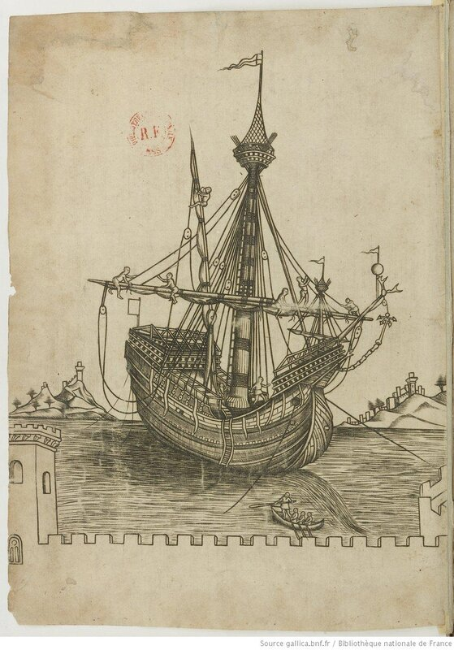
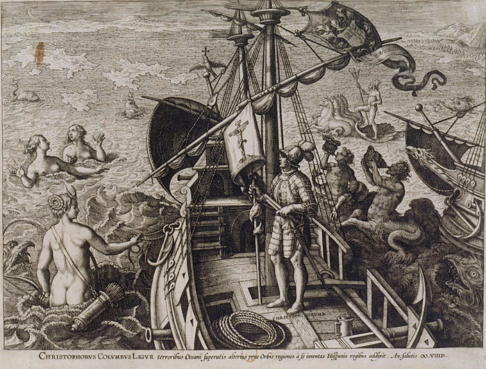
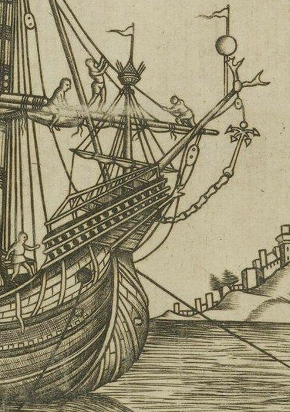
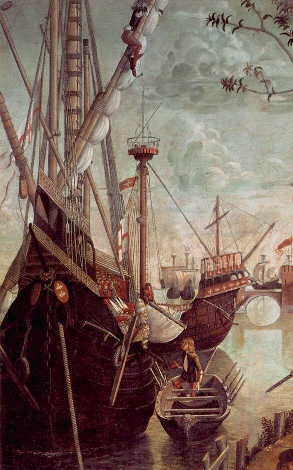

Корпус каракки
Вот он, вот он… Грубый, дюжий,
Неуклюжий…
И. И. Садофьев. Агония
Выше мы отметили, что основным отличительным признаком каракки было наличие смешанного парусного вооружения: наряду с прямыми парусами она имела мачту с латинским. Однако уникальным был не только рангоут и такелаж, но и конструкция корпуса нового типа корабля.
В описаниях каракки почти всегда отмечается заметная выпуклость бортов (так называемая «луковичная» форма корпуса), подкрепление корпусной обшивки прочными продольными брусьями – бархоутами, и, конечно, развитые надстройки на носу и на корме. Ввиду того, что нас в первую очередь интересуют средиземноморские каракки (не забудем, что мы говорим сейчас о генуэзском кораблестроении), мы оставим пока в стороне первые северные каракки с клинкерной (внакрой) обшивкой корпуса, а рассмотрим южные образцы, корпуса которых набирали по давней традиции в карвель (вгладь).

Средиземноморская каракка. Гравюра из манускрипта XV века (Французская национальная библиотека)
Принадлежность изображенной каракки к южному (средиземноморскому) семейству выдают выступающие за борт оконечности бимсов, на которые положена главная палуба корабля. Эта особенность конструкции позволяет нам судить о геометрии этой палубы; заметная погибь по направлению к носу обеспечивала крутой подъем палубы вверх, в результате чего носовая надстройка давала возможность абордажной партии на военных каракках высаживаться даже на самые высокие корабли той эпохи, а также уверенно защищала находящихся на форкастеле бойцов от оружия противника. Возведенный над носовой надстройкой каркас из брусьев служил для натягивания защитных сетей (более подробно эту конструкцию мы обсуждали раньше). Нечто подобное, кстати, мы видим и на ахтеркастеле, кормовой надстройке. Сооружения эти изготовлены из толстых брусьев, имеющих явно избыточную прочность для такой функции, как поддержание тента для защиты от стихии или сетей для защиты от противника. Представляется, что они служили дополнительным конструкционным элементом для обеспечения прочности корпуса, ослабленного разрывом верхней палубы в средней части корабля. Подобно тому предмету мебели из «Покинутой деревни» Оливера Голдсмита
The chest contrived a double debt to pay,
A bed by night, a chest of drawers by day.
Сундук лишь днем вместилище для платья,
А ночью служит жесткою кроватью
(Перевод А. Парина)
И сам характер каркаса на корме каракки, расположенного поперек судна, подтверждает нашу версию о том, что это не просто надстройка, а элемент конструкции, обеспечивающей поперечную прочность. Как, например, и поперечное размещение палубного настила на корабле Христофора Колумба с известной гравюры Де Бри:

Еще одна особенность корпуса каракки, продиктованная. не в последнюю очередь, требованиями обеспечения его прочности, – наличие фендерсов, или skids (по-английски). Мы раньше описывали их в заметках о северных каракках; приведем здесь лишь отрывок из определения этих брусьев у Фалконера: «длинные изогнутые штуки, подогнанные к вертикальной кривизне корабельного борта».
Обратим ваше внимание еще на один характерный элемент корпуса каракки: нависающую над водой носовую часть, характерный «клюв», определяющий силуэт каракки. Рассмотрим его на увеличенном фрагменте нашей гравюры:

Конечно, здесь художник погрешил против законов перспективы, но нам это только наруку: мы можем рассмотреть структуру интересующего нас элемента. Эта структура очень напоминает аналогичные элемент у таких кораблей Средиземного моря, как шебека и тартана. К сожалению, по нашему изображению трудно сказать, как эта конструкция крепится к носу корабля. Ясно, что она не является продолжением форштевня: центральный брус конструкции покоится на верхней точке стема. А две части по обе стороны от центральной оси очень даже напоминают две сходни. Кстати, они так и называются, об этом пишет О.Жаль в своем Морском словаре в статье 3. Échelle. Échelle с морского языка Прованса как раз и переводится на русский как «трап, сходня». Мы можем увидеть такой же нос на известной картине Карпаччо Прибытие паломников в Кёльн, 1490 год.

Échelle. Фрагмент картины Карпаччо Arrivo dei pellegrini a Colonia , 1490.
Дальнейшее исследование элементов корпуса средиземноморской каракки продолжим в следующий раз.